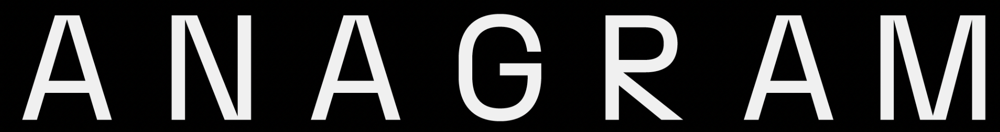
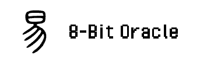
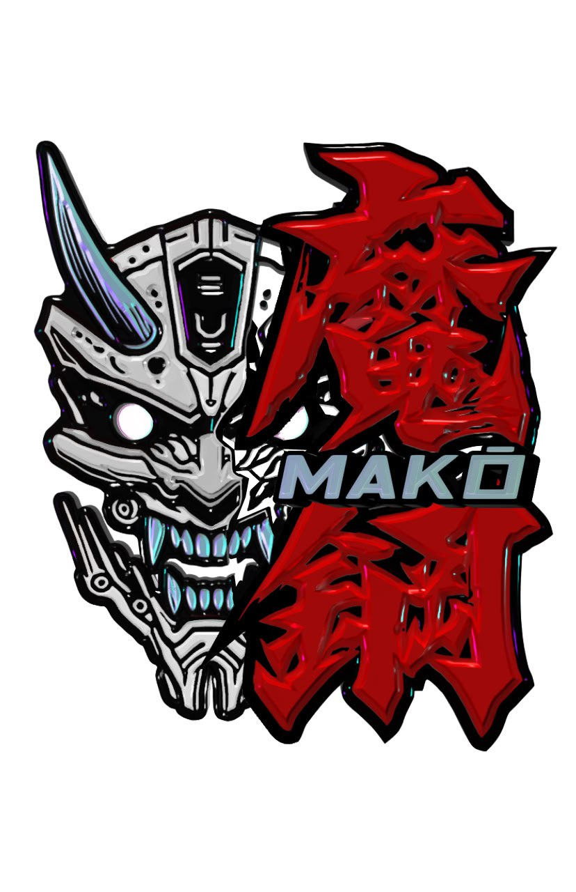

Building the future together
Collective
The Bonsol Collective is a group of individuals & entities who are passionate about the future of verifiable compute and dedicated to supporting the development of the Bonsol ecosystem on Solana.
If you are interested in joining the Bonsol Collective, please reach out to us on X.
Co-Founders:


Collective Members:

